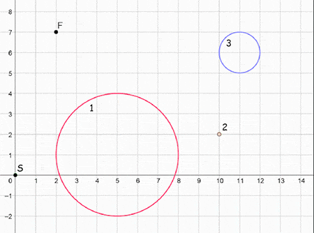

Pak Dengklek sedang berada di sebuah ruangan yang dapat direpresentasikan dalam sistem koordinat Kartesius. Awalnya, ruangan tersebut gelap gulita dan hanya terdapat sebuah sumber cahaya yang memancarkan sinar.
Sebuah sinar dapat direpresentasikan dengan $3$ parameter: titik pusat yang berada pada koordinat $(x_p, y_p)$, lebar sinar $w$, dan arah sinar $d$. Variabel $d$ hanya dapat bernilai $\text{vertikal}$ atau $\text{horizontal}$. Sinar ini menyinari semua titik $(x', y')$ yang memenuhi pertidaksamaan:
Dalam ruangan tersebut terdapat $N$ buah pilar ajaib yang dinomori dari $1$ hingga $N$. Pilar ke-$i$ berbentuk lingkaran yang memiliki titik pusat $(X_i, Y_i)$ dan jari-jari $R_i$. Dua buah pilar boleh saja bertumpukan.
Pilar-pilar ajaib dalam ruangan tersebut memiliki sifat khusus. Apabila pilar ke-$i$ terkena suatu sinar dengan arah $d$, maka pilar tersebut akan memancarkan sinar dari titik pusat $(X_i, Y_i)$ dengan lebar $R_i$ dan arah $d$. Sebuah pilar dikatakan terkena suatu sinar apabila terdapat sebuah titik yang berada di dalam pilar yang disinari oleh sinar tersebut. Sebuah titik $(x, y)$ dikatakan berada di dalam pilar ke-$i$ apabila $(X_i - x)^2 + (Y_i - y)^2 \leq R_i^2$.
Pak Dengklek juga dapat meningkatkan keajaiban pilar ke-$i$ dengan biaya sebesar $C_i$. Apabila pilar ke-$i$ terkena suatu sinar, dan keajaiban pilar tersebut ditingkatkan, maka pilar tersebut akan memancarkan $2$ buah sinar arah vertikal dan horizontal dari titik pusat $(X_i, Y_i)$ dengan lebar $R_i$. Awalnya, keajaiban semua pilar belum ditingkatkan.
Diketahui bahwa satu-satunya sumber cahaya memancarkan sinar dari titik pusat $(X_S, Y_S)$ dengan lebar $0$ dan arah horizontal. Pak Dengklek ingin mengetahui total biaya minimum yang dibutuhkan untuk menyinari titik $(X_F, Y_F)$. Bantulah Pak Dengklek untuk mencari total biaya minimum untuk menyinari titik tersebut, atau beri tahu Pak Dengklek apabila hal tersebut tidaklah mungkin.
Masukan diberikan dalam format berikut:
N XS YS XF YF X1 Y1 R1 C1 X2 Y2 R2 C2 . . . XN YN RN CN
Sebuah baris berisi sebuah bilangan yang menunjukkan total biaya minimum yang dibutuhkan
untuk menyinari titik $(X_F, Y_F)$. Keluarkan -1 apabila
titik tersebut tidak mungkin disinari.
Contoh ini dapat diilustrasikan dengan animasi berikut. Pak Dengklek meningkatkan keajaiban dari pilar ke-$2$ dan ke-$3$ dengan total biaya sebesar $5$. Tidak ada konfigurasi peningkatan keajaiban pilar lainnya yang menghasilkan jawaban lebih optimal.

Untuk semua subsoal, berlaku: